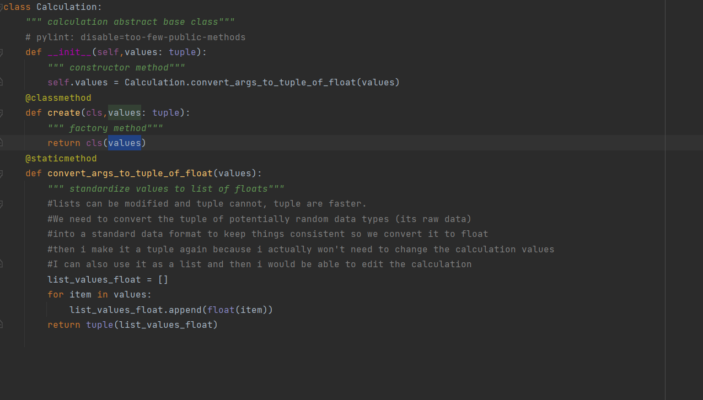

Seperation of Concern
Seperation of Concern
A key principle of software development and architecture is the notion of separation of concerns. At a low level, this principle is closely related to the Single Responsibility Principle of object oriented programming. The general idea is that one should avoid co-locating different concerns within the design or code. For instance, if your application includes business logic for identifying certain noteworthy items to display to the user, and your application formats such items in a certain way to make them more noticeable, it would violate separation of concerns if both the logic for determining which items were noteworthy and the formatting of these items were in the same place. The design would be more maintainable, less tightly coupled, and less likely to violate the Don't Repeat Yourself principle if the logic for determining which items needed formatted were located in a single location (with other business logic), and were exposed to the user interface code responsible for formatting simply as a property.
Separation of Concerns tends to be a natural consequence of following the Don't Repeat Yourself principle, since of necessity abstractions must be built to encapsulate concepts that would otherwise be repeated throughout the application. As long as these abstractions are logically grouped and organized, then Separation of Concerns should be achieved.
DRY principle
The Don't Repeat Yourself (DRY) principle states that duplication in logic should be eliminated via abstraction; duplication in process should be eliminated via automation. Duplication is Waste. Adding additional, unnecessary code to a codebase increases the amount of work required to extend and maintain the software in the future. Duplicate code adds to technical debt. Whether the duplication stems from Copy Paste Programming or poor understanding of how to apply abstraction, it decreases the quality of the code. Duplication in process is also waste if it can be automated. Manual testing, manual build and integration processes, etc. should all be eliminated whenever possible through the use of automation.
SOC in calculator
In the calculator program the methods are defined properly and the logic is seperated and written in different method inorder to maintain the DRY principle. Consider the Below image:
Here the logic for adding the calculation object to history is done while performing all the four Calculator operation.The business logic is seperated and written in different method. Thus Achieving the Seperation of concern and DRY Principle. The method holding the business logic is listed below
So Instead of performing the operation for each and every calculation the method is written in its own method and called rather than writing the logic everytime for all the 4 Operations.
Principles following Dry
- Single Responsibility Principle
- Open/Closed Principle
Single Responsibility Principle
The Single Responsibility Principle (SRP) states that a class should have only one reason to change. So if a class has more than one responsibility, it becomes coupled. A change to one responsibility results to modification of the other responsibility.
We have a User class which is responsible for both the user properties and user database management. If the application changes in a way that it affect database management functions. The classes that make use of User properties will have to be touched and recompiled to compensate for the new changes. It’s like a domino effect, touch one card it affects all other cards in line. So we simply split the class, we create another class that will handle the one responsibility of storing an user to a database
SRP in Calculator
Here the calculator Class handles only once operation. It creates Only the instance for Calculator class.
Open-Closed Principle
The Open-Closed Principle (OCP) states that software entities (classes, modules, methods, etc.) should be open for extension, but closed for modification. In practice, this means creating software entities whose behavior can be changed without the need to edit and recompile the code itself. The simplest way to demonstrate this principle is to consider a method that does one thing. Let's say it writes to a particular file, the name of which is hard-coded into the method. If the requirements change, and the filename now needs to be different in certain situations, we must open up the method to change the filename. If, on the other hand, the filename had been passed in as a parameter, we would be able to modify the behavior of this method without changing its source, keeping it closed to modification.

Here in calculator The addition class performs only one operation and it extends the base class Calculation. If the addition, subtraction,multiplication and division does not extend the base class the Logic related to the operations will be in single file and there will various changes when there is a change in logic.